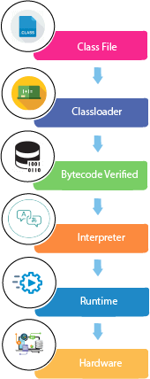
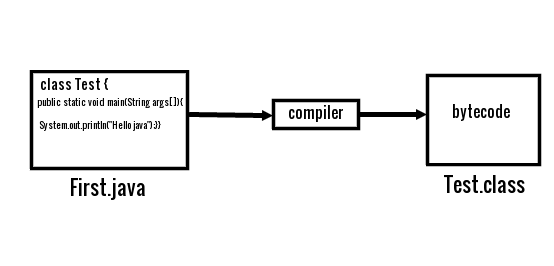

Parameters that will be used in Java Programs
- class keyword is used to declare a class in java.
- public keyword is an access modifier which represents visibility, it means it is visible to all.
- static is a keyword, if we declare any method as static, it is known as static method. The core advantage of static method is that there is no need to create object to invoke the static method. The main method is executed by the JVM, so it doesn't require to create object to invoke the main method. So it saves memory.
- void is the return type of the method, it means it doesn't return any value.
- main represents the starting point of the program.
- String[] args is used for command line argument. We will learn it later.
- System.out.println() is used print statement.
A Simple Java Program (Compiling and Executing)
PROGRAM CODE
{
public static void main(String args[])
{
System.out.println("Group 3");
}
}
- We save this file as Simple.java
- To compile: javac Simple.java
- To execute: java Simple
In how many ways can we write a Java Program?
-
By changing sequence of the modifiers, method prototype is not changed:
static public void main(String args[]) -
Subscript notation in java array can be used after type, before variable or after variable:
public static void main(String[] args)
public static void main(String []args)
public static void main(String args[]) -
You can provide var-args support to main method by passing 3 ellipses (dots):
public static void main(String... args) -
Having semicolon at the end of class in java is optional:
class A
{
static public void main(String... args){
System.out.println("hello java");
}
};
Internal Details of the "Group 3" Java Program
What happens at compile time?
At compile time, java file is compiled by Java Compiler (It does not interact with OS)
and converts the java code into bytecode.

What happens at runtime?
At runtime, following steps are performed:

Bytecode Verifier: checks the code fragments for illegal code that can violate access right to objects.
Interpreter: read bytecode stream then execute the instructions.
Can you save a java source file by other name than the class name?
Yes, if the class is not public. It is explained in the figure given below:

To compile: javac First.java
To execute: java Test
Can you have multiple classes in a java source file?
Yes, like the figure given below illustrates: